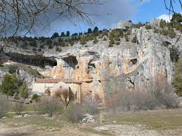

Video-presentacion Soria
Si el video no se reproduce correctamente pulse aqui
- Localizacion
- Localidades principales
- Geografia de la provincia
- Historia
- Cultura
- Naturaleza
- Tradiciones
- Otros aspectos de interes
LOCALIZACION
Su superficie es de 10 306,42 km² y está situada en el extremo oriental de la comunidad autónoma de Castilla y León. Limita con la comunidad autónoma de La Rioja y con las provincias de Zaragoza (Aragón), Guadalajara (Castilla-La Mancha), Segovia y Burgos (Castilla y León).
Mapa
Si el mapa superior no funciona haga click aqui
Ir arriba
LOCALIDADES PRINCIPALES
- Soria ---> 39398 habitantes
- Almazán ---> 5489 habitantes
- Burgo de Osma-Ciudad de Osma ---> 4940 habitantes
- Ólvega ---> 3656 habitantes
- San Esteban de Gormaz ---> 3005 habitantes
- Ágreda ---> 3001 habitantes
- Golmayo ---> 2626 habitantes
- San Leonardo de Yagüe ---> 2044 habitantes
- Covaleda ---> 1680 habitantes
- Arcos de Jalón ---> 1469 habitantes
- Duruelo de la Sierra ---> 1090 habitantes
- Berlanga de Duero ---> 856 habitantes
- Vinuesa ---> 855 habitantes
- Navaleno ---> 769 habitantes
- Garray ---> 732 habitantes
- Medinaceli ---> 713 habitantes
- Langa de Duero ---> 704 habitantes
- San Pedro Manrique ---> 620 habitantes
- Almarza ---> 591 habitantes
- Quintana Redonda ---> 489 habitantes
Ir arriba
GEOGRAFIA
La altitud media, de 1025 metros, y las sierras situadas al norte de la provincia condicionan el clima. Al este y sur hay comarcas pertenecientes a la cuenca del Ebro, en el afluente río Jalón; en el norte también hay zonas que desaguan en el Ebro, las cuencas de los ríos Alhama y Cidacos. La mayor parte de la provincia forma la cabecera de la cuenca del Duero.
Clima
El invierno se caracteriza por ser largo y frío (3,2 °C en enero), llegándose a producir anualmente unos 83 días de heladas. Por su parte el verano es cálido (20 °C en julio y agosto), con unas temperaturas máximas alrededor de los 28 °C, que en los días de canícula pueden llegar hasta los 35 °C, pero el calor estival se ve suavizado por unas noches frescas (12,4 °C. de mínima en julio). Las precipitaciones son moderadas (512 mm al año) siendo la primavera la estación más lluviosa destacando los meses de abril y mayo; en invierno las nevadas son frecuentes.
Si el widget superior no funciona haga click aqui
Ir arriba
HISTORIA
En sus tierras encontramos restos prehistóricos de incuestionable valor, entre las que destacan las pinturas rupestres. Dos de los yacimientos más importantes son los de Torralba y Ambrona, yacimientos paleontológicos y arqueológicos que corresponden a varios niveles fosilíferos del Paleolítico Inferior, de hace unos 350 000 años.
Durante la Edad del Hierro, la provincia de Soria formaba parte de la Celtiberia, territorio en el que vivían los celtíberos, considerados mayoritariamente como celtas. Esta cultura ha dejado en la provincia restos arqueológicos de tanta importancia como los de Numancia, Uxama o Termancia.
Tras las guerras de conquista y el posterior proceso de romanización, la provincia perteneció al Conventus Cluniensis de la provincia romana de Tarraconensis. De este periodo destacan las citadas ciudades de Numancia, Tiermes y Medinaceli.
Tras la caída del Imperio romano fue ocupada por visigodos primero y musulmanes después, de cuyo paso se conservan los castillos de Medinaceli y Gormaz, la fortaleza califal más grande de Europa en su clase.
Es durante esta época de dominio musulmán el guerrero musulmán Almanzor tenía su sede en la provincia, en el lugar de Medinaceli. Los lugares de la ribera del Duero soriano, pasaban constantemente de manos musulmanas a cristianas, y viceversa, estando prácticamente despobladas. De esta época son las innumerables atalayas y torres defensivas que salpican la provincia y que dieron el nombre a Castilla, tierra de castillos. Mientras tanto, hasta los siglos ix y x, habitaban el norte de la provincia de Soria gentes semi-paganas escasamente cristianizadas. Las fuentes árabes los denominaban bárbaros, en vez de usar el término habitual para referirse a los cristianos.
Reino de Pamblona
Durante la reconquista en la Edad Media, la zona norte y oriental de la provincia de Soria pertenecieron desde el 1016 al Reino de Pamplona, porque el rey Sancho Garcés III llegó a un acuerdo sobre los límites entre el Condado de Castilla y el Reino de Pamplona, quedando para Pamplona la expansión hacia el sur y el este, la zona norte-oriental de Soria y el valle del Ebro, entre otros territorios.
En 1127, mediante mediación se acordó el Pacto de Támara. En este pacto, Alfonso el Batallador renunciaba al título de emperador y se delimitaron las fronteras entre los reinos de Castilla y los de Pamplona y Aragón con devolución de alguno de los territorios a Castilla.
Castilla
Soria pasó a formar parte de Castilla en 1134, durante el reinado de Alfonso VII, en 1187 convocó a los nobles y a los representantes de las ciudades más importantes de Castilla a Cortes, serían el primer ejemplo de parlamentarismo en el mundo occidental. Después de la reconquista en la Edad Media, Soria conoció el mayor esplendor de su historia, convirtiéndose en la joya del románico que hoy día todavía es.
Casi todas las actividades económicas de la Edad Media soriana giraban en torno a la lana, Soria controlaba el esquileo estival de sus rebaños y el envío del preciado vellón hacia Burgos y los puertos del norte de la península ibérica. En 1492, el decreto de expulsión de los judíos trajo la decadencia económica y social de Soria. Con la unión de los reinos de Aragón y Castilla, la provincia dejó de ser un enclave estratégico. Esta situación se prolongó durante la Edad Moderna, en la que el declive de la rentabilidad de la ganadería puso a la provincia en una coyuntura de deterioro económico y demográfico.
La Edad Contemporánea estuvo marcada por los continuos conflictos bélicos en los que participó la nación española, que siguieron mermando la potencia económica de la provincia.
Soria ha vivido la inestabilidad política, económica y social generalizada en toda la nación, pero que parecía multiplicarse en aquellas zonas de carácter eminentemente agrícola. Estas condiciones inciden, en la emigración y el envejecimiento paulatino de su población. En la actualidad, Soria está recuperando el esplendor de otros tiempos, potenciando sobre todo en sus posibilidades turísticas, propiciadas por lo singular de sus paisajes y su atemporal belleza.
La provincia de Soria nace con la división provincial española de Javier de Burgos de 1833. No obstante, existían en la Corona de Castilla desde finales del siglo xvi unas entidades de carácter meramente fiscal llamadas provincias, carentes de cualquier valor administrativo o jurídico y que convivían con muchas otras estructuras diferentes. Entre ellas había una con sede en la ciudad de Soria. Estas no se deben confundir con el concepto de provincia actual. Más tarde, en el siglo xviii, se crearían las intendencias y por último en el siglo xix las provincias en el sentído político actual del término.
Siglo XIX
A comienzos de siglo xix, la provincia sufre varios cambios. En 1802, las poblaciones del Partido de Logroño pasan a formar parte de la provincia de Soria, y una nueva reforma de 1812 convierte tres cuartas partes de La Rioja en parte de la provincia soriana. Sin embargo, tras la reforma de Javier de Burgos de 1833, que crea todas las provincias españolas en el sentido político actual del término y entre ellas la actual de Soria, pasa a tener 10 400 km². Los territorios perdidos principalmente por la provincia de Guadalajara y la provincia de Logroño. El territorio aún incluido en la provincia se constituye en 540 municipios constitucionales divididos en cinco partidos judiciales.
La provincia pasa a pertenecer a la región de Castilla la Vieja en 1833, y a ella la adscribían muchos otros planes de organización territorial decimonónicos. El de Patricio de la Escosura de 1847 la unía a la región de Burgos. El intento de organización territorial de Francisco Silvela en 1891 adscribía la provincia de Soria a Aragón.
Ir arriba
CULTURA
Centro de interpretacion de Agreda
El museo, situado en la calle Mezquitas del «barrio moro», junto a la Muralla Árabe de Ágreda permite entender las transformaciones que ha sufrido la villa de Ágreda a lo largo de su historia. El museo cuenta con material visual y audiovisual sobre la historia de la localidad.
Museo de arte sacro de Nuestra señora de la Peña
El museo cuenta con 25 piezas de retablos y esculturas entre los siglos XIII y XVIII, entre ellas cabe destacar:
El retablo de Nuestra Seńora de la Peña, de estilo barroco, del siglo XVIII. En la parte central se encuentra un óleo que representa la Inmaculada Concepción.
Virgen de la Peña, una escultura anónima del siglo XIII, trabajada en madera policromada de pino. La escultura represemta a la Virgen sentada con el nińo sobre sus rodillas.
El retablo de San Juan Evangelista, de estilo gótico internacional fechado entre 1430-1445.
El retablo de la Virgen del Rosario, de estructura barroca, data del siglo XVIII y cuenta con tablas pintadas del siglo XVI.
La Trinidad como Trono de Gracia, pintura al temple sobre tabla, data de entre 1420-1430.
La pedrela gótica con escenas de la vida de Cristo, pinturas de entre 1485 y 1505. Se atribuye la obra a Miguel Jiménez, discípulo del Bartolomé Bermejo, de la Escuela Aragonesa.
Palacio ducal de Medinaceli
El palacio es renacentista y fue construido a lo largo del siglo XVII como digna sede de la Casa de Medinaceli, cuyos escudos están dispuestos en la fachada. Cayó en desuso ya durante el siglo XIX y se deterioró hasta la ruina casi total, estado en el que estuvo durante décadas hasta que concluyeron parcialmente los trabajos de restauración iniciados a finales de los años noventa.
En diciembre de 2008 se inauguró un museo dedicado a exposiciones culturales, con diez salas que ocupan la práctica totalidad de la planta baja del antiguo palacio. Declarado Bien de Interés Cultural en la categoría de Monumento el 1 de junio de 1979.
Ir arriba
NATURALEZA
Parque natural del Cañon del Rio Lobos
El río Lobos es el eje del cañón del mismo nombre y causante de la erosión que le ha dado forma. Nace en la de Burgos, aunque discurre principalmente por la provincia de Soria. Se sitúa en la separación de la cordillera Ibérica con la alta meseta del Duero.
Las 10 176ha que comprende el paraje del Cañón del Río Lobos son territorio de Santa María de las Hoyas, San Leonardo de Yagüe, Casarejos, Herrera de Soria, Nafría de Ucero y Hontoria del Pinar. Fueron declaradas parque natural por Decreto de la Junta de Castilla y León 115/1985 de 10 de octubre de 1985, en atención a sus singulares atributos naturales. Posteriormente, en 1987, se declaró ese mismo ámbito Zona de Especial Protección para las Aves (ZEPA). En la actualidad está en tramitación un nuevo Plan de Ordenación de los Recursos Naturales que ampliaría la superficie a 12 244 hectáreas e incluiría terrenos del municipio de Espeja de San Marcelino.
Sonido Rio Lobos
Reserva natural del Sabinar de Calatañazor
El Sabinar de Calatañazor se encuentra situado en la parte noroccidental de la provincia de Soria, al sur de la sierra de Cabrejas, en el término municipal de Calatañazor y muy cercano a Muriel de la Fuente. Ocupa una extensión de 30 hectáreas de las cuales 22 son de bosque sabinar. Fue declarado reserva natural el 11 de julio de 2000 por la ley 9/2000 y está integrado en la propuesta de lugar de importancia comunitaria Sabinares Sierra de Cabrejas. Es el monte de utilidad pública número 248 de la provincia de Soria.
Su declaración está encaminada a la conservación del espacio natural singular así como de los usos y costumbres que se han venido dando en el mismo a la vez que se persigue la difusión de sus valores naturales y etnológicos entre la población. El Sabinar de Calatañazor se complementa con el Monumento Natural de la Fuentona que se ubica pegado a él. Entre ambos espacios se encuentra el Centro de Interpretación de los mismos. El palacio de Santa Coloma acoge las instalaciones de interpretación y administrativas de estos dos espacios naturales.

Parque natural de la laguna Negra y los circos glaciares de Urbion
Tiene una extensión de 4617 hectáreas, repartidas por los municipios de Covaleda, Duruelo de la Sierra y Vinuesa. Fue declarado parque natural en el año 2010. Se nuclea en torno a la Laguna Negra de Urbión, famosa por el relato que Antonio Machado escribió en 1912 titulado Los hijos de Alvargónzalez.
El parque está integrado en la Red Natura 2000, forma parte de la Zona de Especial Protección para las Aves (ZEPA) y está declarado "Lugar de Importancia Comunitaria" (LIC) de la Sierra de Urbión y Cebollera.
La mayor parte de la superficie del parque se encuentra por encima de los 1700 metros de altura, en la franja oromed iterráneo entre los 1500 y 2000 metros de altitud. El paisaje es glaciar modelado en el cuaternario. Abundan las lagunas de origen glacial, estando algunas de ellas recogidas en el Catálogo Regional de Zonas Húmedas de Castilla y León. Destacan la laguna Negra, la laguna Larga, la laguna Helada, la laguna Mansegosa y laguna del Hornillo. El pico Urbión, con sus 2228 metros de altura, es la mayor cota del parque y una de las cumbres más altas de la provincia de Soria; en él nace el río Duero.
Reserva natural del acebal de Garagüeta
El Acebal de Garagüeta (Soria, España), es el mayor bosque de acebos existente en la península ibérica y de Europa meridional. Comprende 406,4 hectáreas de bosque, de las cuales 180 son masa pura continua de acebos que crecen de forma laberíntica formando bóvedas en las que se refugian tordos, corzos y zorzales. Estas bóvedas se denominan «sestiles» (de siesta), y en ellos hay una diferencia térmica de unos 5ºC con respecto a la temperatura exterior, lo que hace los hace más frescos en verano y menos fríos en invierno. El conjunto posee un extraordinario valor ecológico.
Ir arriba
TRADICIONES
Semana Santa
Declarada Fiesta de Interés Turístico Regional de Castilla y León. Sus tallas se encuentran a la altura de las grandes tallas castellanas que participan en la Semana Santa en Castilla y León. Como muestra de ello, se puede contemplar durante la Semana de Pasión la bella imagen del Cristo del Humilladero (siglo xvi), atribuido a Juan de Juni o a su escuela.
Fiestas de San Juan
Declaradas Fiesta de Interés Turístico Regional de Castilla y León.68 De larga historia, según algunas interpretaciones es incluso mencionada en el Fuero de Soria de 1110. La ciudad de Soria celebra sus fiestas en las fechas comprendidas entre el miércoles inmediato posterior al día de San Juan, 24 de junio, y el lunes inmediato posterior a dicha fecha, ambos inclusive. Cuando el citado miércoles coincida con la festividad del día de San Juan, las fiestas comenzarán en ese mismo día, siendo pregonadas, todos los años dicho miércoles a medianoche.
La ciudad se distribuye durante sus fiestas en "las doce Cuadrillas", cada una con el nombre de un Santo. Junto a la figura del toro, las Cuadrillas son las protagonistas de los Sanjuanes y proviene de la antigua distribución medieval de la ciudad, en dieciséis barrios o collaciones. Las Cuadrillas son las encargadas de proveer el toro para el viernes, de repartir las tajadas entre los vecinos que han entrado en Fiestas el sábado y el domingo, de organizar los Agés, de preparar la Caldera y sacar en procesión a los santos de Cuadrilla el Lunes de Bailas.
Carnaval
Comienza el jueves anterior al Miércoles de Ceniza, el llamado Jueves Lardero, documentado al menos desde el siglo xvii. Es tradición del Jueves Lardero ir a merendar a los parajes cercanos a la ciudad. En sus orígenes el Jueves Lardero no marcaba el inicio de los carnavales y los chicos reclamaban la gallofa por las casas para poder preparar luego la merienda. También está documentada otra tradición, perdida y recuperada en 2018, que consistía en correr dos toros de fuego construidos en madera el Lunes de Carnaval. El último día se realiza el Entierro de la Sardina, con quema de la sardina en el río Duero.
Ir arriba
OTROS ASPECTOS DE INTERES
Gastronomia
La cocina de esta provincia castellana es fundamentalmente una mezcla de lo pastoril y lo ganadero. Es zona Soria de asado castellano. Debido a la cercanía con Castilla-La Mancha posee algunas influencias y platos adoptados.
La ganadería proporciona numerosos quesos castellanos, entre ellos el de leche de cabra y de oveja. En algunas ocasiones se denomina queso de Soria (queso de cabra).
La ganadería lanar proporciona abundantes oportunidades culinarias para elaborar platos de oveja: lechazo asado o el cochinillo. El asado de cordero tiene en esta provincia una variante sencilla: el somarro de cordero que consiste en sangre fresca de cordero sazonada y puesta a la brasa. El hígado de cordero a la molinera, la chanfaina de Soria con hígado, sangre y otras asaduras. La matanza del cerdo (denominada en la provincia como ilustración) es habitual en los primeros meses de invierno. También es famoso el Torrezno de Soria, que tiene marca de garantía. El denominado domingo de Calderas en la capital se sirve el toro guisado elaborado en calderas al aire libre.
Fauna
Hay diversas especies animales que han encontrado un hábitat adecuado. Las de mayor presencia son las aves, y entre ellas las rapaces como el alimoche, el halcón, el águila, el azor y el búho real, y predominantemente el buitre leonado, que puebla las cornisas de los farallones y sus oquedades y que se mantiene en permanente vuelo por la bóveda virtual del cañón. También algunos mamíferos han encontrado acomodo en la hoz del río y en las aguas de este conviven truchas y nutrias. También hay un gran número de especies de anfibios, reptiles y peces como la rana, la lagartija, la culebra, la víbora hocicuda y el barbo
Flora
Se pueden ver poblaciones abundantes de pino pudio, quejigo y encina. En los espacios cubiertos de matorral se pueden ver enebros, gayubas y aliagas, que se complementan con tomillo, espliego y salvia.
Las riberas están pobladas por los chopos, alisos, álamos y los sauces y en las aguas hay nenúfares, eneas y lentejuelas.